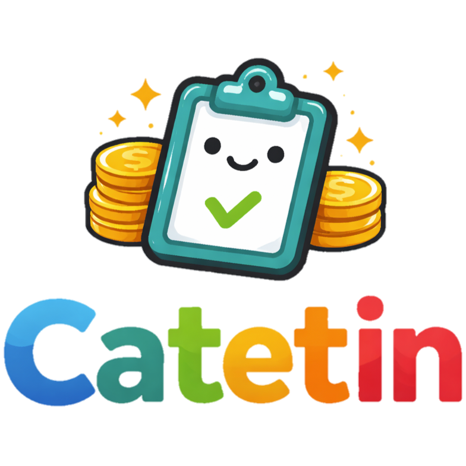

Profil Aplikasi

Catetin adalah aplikasi web sederhana yang dirancang untuk membantu pengguna dalam mencatat pemasukan dan pengeluaran secara praktis, rapi, dan terstruktur.
Tujuan Aplikasi
Aplikasi ini bertujuan untuk memudahkan pengguna dalam mengelola keuangan harian, sehingga pengguna dapat mengetahui kondisi keuangan secara lebih jelas.
Fitur Utama
- Login dan pembuatan akun pengguna
- Pencatatan pemasukan dan pengeluaran
- Pengelompokan transaksi berdasarkan kategori
- Menampilkan daftar transaksi
Manfaat
Dengan Catetin, pengguna dapat lebih disiplin dalam mencatat keuangan dan membuat keputusan finansial yang lebih baik.